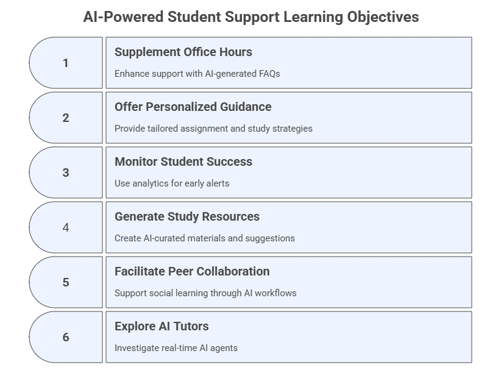

6. AI‑Powered Student Support#
Centering the Personalized Assistant (PA) as the Core Student Support Tool
Generative AI enables instructors to expand availability, personalize guidance, and deliver timely academic support. In this module, the Course Personalized Assistant (PA), built progressively from the start of this program, becomes the central hub of all student support workflows. The PA supplements office hours, answers questions, provides study strategies, generates resources, supports peer collaboration, offers early alerts, and interacts multimodally. Other AI tools remain valuable, but the PA becomes the student-facing anchor that integrates them into a coherent support ecosystem.
Learning Objectives#
After completing this module, participants will be able to:
Supplement office hours with AI-generated FAQs and persistent support channels.
Offer personalized assignment guidance and study strategies using AI.
Monitor student success using structured analytics and AI‑assisted early alerts.
Generate AI‑curated study resources, tutoring suggestions, and multimodal aids.
Facilitate peer collaboration and social learning through AI‑supported workflows.
Explore AI tutors, including real‑time camera- and screen‑aware AI agents.

6.1 The Course Personalized Assistant as the Core Support Hub#
Purpose#
Place the Course PA at the center of support: a consistent, persistent tutor accessible 24/7, deeply grounded in course files, policies, learning outcomes, assignments, and weekly materials.
What the PA Can Do (Student-Facing)#
Provide multiple level explanations
Clarify assignments and expectations (without completing graded work)
Offer study plans, study strategies, revision pathways
Produce summaries, flashcards, diagrams, examples
Suggest peer collaboration strategies
Provide responsible-AI reminders
Offer nudges, pacing suggestions, and self-assessment tools
What the PA Should Not Do#
Provide answers or solutions to graded work
Misrepresent institutional or syllabus policies
Override instructor judgment
Replace office hours or interpersonal communication
Updates to the PA#
Where necessary, update your existing PA by adding:
New core responsibilities for student support
New behaviors and capabilities for study guidance, early alerts, and collaboration
Tightened safety & boundary rules for academic integrity
New conversation starters
Uploading all student-oriented course materials created since Module 1
Note: Test if your PA refuses to complete graded work by prompting it to do so. If it does not refuse, then you should revise the core role or the safety & boundary section within the instructions.
6.2 Extend Office Hours and Provide Timely Responses#
Purpose#
Extend the instructor’s presence beyond scheduled hours by using AI to generate consistent, accurate responses to common student questions. Although multiple tools can generate FAQs or office-hour support, the PA is still the official 24/7 student-facing channel.
Alternative Tool 1: General-Purpose LLMs (e.g., ChatGPT, Copilot, Gemini, Grok, etc.)#
Upload your course materials and prompt the LLM to generate an FAQ or any other support resources desired.
Prompt Template - Instructional
Read the attached PDF file(s) and generate a structured FAQ section that summarizes the key aspects of the material.
Ensure each FAQ includes a clear question and a concise, informative answer, grouped into thematic categories.
Note: If you are working within your AI workspace, then the course material will already be uploaded in the model and you only need to prompt it to generate the new support material. Also, in Modules 3 and 5 you created various course materials which may serve as student support.
Alternative Tool 2: NotebookLM#
The goal here is to create a shared, student-facing Notebook for course study support.
NotebookLM can serve as a powerful secondary support tool for students, complementing the PA. The instructor creates a shared NotebookLM workspace by uploading only student-facing materials and granting students access to explore the full range of NotebookLM features.
Unlike the PA—which offers structured, policy-aligned guidance, NotebookLM empowers students to explore course materials independently through grounded, multimodal interactions.
How to Use NotebookLM as a Student Support Tool#
Create a new NotebookLM dedicated to the course.
Upload only materials intended for students, such as:
syllabus
lecture slides or summaries
weekly notes
assignment instructions (without solutions)
public readings or open-access articles
videos, URLs, transcripts, and multimedia resources
Because NotebookLM shares all uploaded materials with its users, do NOT upload any instructor-only content, including:
grading rubrics with detailed criteria
answer keys or model solutions
teaching notes or internal planning
test/question banks
Share the NotebookLM link with students so they can freely explore every feature.
Benefits of NotebookLM for Student Learning#
NotebookLM supports learning through multimodal, source-grounded interactions:
Document-based accuracy — All answers come only from uploaded course materials.
Multimodal sources — Students learn from text, PDFs, images, URLs, and video content.
Audio Overviews (Podcasts) — AI-generated audio explanations students can listen to.
Video Overviews — Narrated AI-generated presentations students can watch.
Mind maps — Visual connections extracted across multiple documents.
Reports — Customizable document that synthesizes information from uploaded sources.
Flashcards — Automatic retrieval practice for key concepts.
Quiz — Test to check knowledge acquisition.
Infographics — Helps students with a visual summary of uploaded sources.
Slide deck — Set of slides summarizing the content of the uploaded sources.
This creates a transparent, student-owned workspace for meaningful engagement with the course content.
Prompt Templates for Students Using NotebookLM#
Give these prompt templates to students within the shared Notebook:
1. Understanding Assignments
Explain the assignment on [Assignment Name] using only the materials uploaded here.
Summarize its purpose, main tasks, and key concepts.
Do not produce the solution.
2. Study Guide Generation
Create a study guide for [Topic] using the resources in this notebook.
Include key ideas, definitions, diagrams, examples, and a short self-check quiz.
3. Video or Multimedia Summary
Summarize the key points from the video or multimedia source titled “[Title]”
using bullet points and a short paragraph explanation.
4. Comparing Sources
Compare how [Topic] is presented across the documents uploaded here.
Highlight similarities, differences, and important insights.
5. Pre‑Class Preparation
Generate a pre-class preparation guide for this week’s materials.
List what I should read, watch, or review.
6.3 Assignment Guidance & Study Strategies#
Purpose#
Help students approach assignments with clarity, confidence, and strategy.
While generative AI tools can assist with assignment interpretation and study planning, the Course Personalized Assistant (PA) remains the primary student-facing tool for guiding academic tasks, providing structured breakdowns, study strategies, and self‑assessment prompts without completing graded work.
Primary Tool: The Course Personalized Assistant#
Your PA is responsible for:
Clarifying assignment descriptions and expectations (without producing solutions)
Breaking down complex tasks into manageable steps
Suggesting prerequisite knowledge or skills to review
Providing study strategies tailored to the task type
Offering revision pathways, self-check questions, and pacing guidance
Helping students identify misconceptions or knowledge gaps
Encouraging responsible AI use while working on assignments
Because the PA is grounded in the syllabus, assignments, rubrics, and course policies, its guidance is contextualized, consistent, and aligned with your teaching intent.
Sample PA Prompt for the Students Students may use this prompt directly with the PA:
Help me understand how to approach [Assignment Name].
Explain the task in your own words, break it into clear steps,
suggest study strategies or prerequisite concepts I should review,
and provide 3–5 self-check questions to confirm my understanding.
Do not give me any part of the solution.
What the PA will generate:#
A simplified explanation of the assignment
A structured approach (step-by-step)
A recommended study plan (daily/weekly)
Suggested tools or resources (if allowed)
A list of self-check or reflection questions
A reminder about responsible AI use
Warnings to avoid using AI to generate prohibited content
When Should Students Use the PA for Assignments?#
Encourage students to contact the PA when they:
are unsure how to start an assignment
need examples of approach, not answers
want a study plan
need help interpreting rubrics
want help identifying what they already know vs. what they must review
need guidance on preparing for group work or collaborative responsibilities
Optional Add-On: PA‑Assisted Study Planning#
Your PA can generate personalized study plans based on the course schedule.
Sample Prompt for the Students
Create a 7-day study plan to help me prepare for [Assignment Name],
considering the course pacing and major concepts we’ve covered.
Suggest checkpoints and ways to evaluate my progress.
Alternative Tool 1: General-Purpose LLMs#
Instructors may use additional AI tools to produce resources to students. Use general LLMs to create:
reading summaries
sample study plans
diagrams or concept maps
lists of common misconceptions
Sample Instructor Prompt (Workspace or private LLM):
Based on the attached assignment and rubric, create a list of common misconceptions students may have and suggest study strategies for each.
Alternative Tool 2: NotebookLM#
NotebookLM can generate grounded resources that can be later distributed:
document-grounded summaries
flashcards on assignment-relevant concepts
video and/or audio explainers
step‑by‑step walkthroughs of prerequisite topics
mindmaps
Note 1: Use NotebookLM to produce structured learning aids based solely on your uploaded readings, then make them available for student support.
Note 2: If you have created the shared Student Notebook, then the students will be able to use it also as their assignment assistant environment.
6.4 Monitor Student Success#
Purpose#
Use engagement data or AI-generated insights to detect patterns that indicate a need for support.
Prompt Template - Design a Student Success Table
I am the instructional designer of the course [Course Name] and want to design a table to collect student information in the course.
The goal is to use the data to calculate a "Student Success Score".
1. Propose a matrix with at least 5 student variables (e.g., attendance, assignment completion, grades, engagement, self-assessments).
2. For each variable, define:
- Data type (numeric, categorical)
- Measurement method
- Weight or influence on success
3. Propose a formula to compute a success score from these variables (e.g., weighted average or custom equation).
4. Explain how this score can be used to monitor or support students throughout the course.
5. Save this matrix as a table in XLSX, CSV, or Google Spreadsheet format.
Note: Not all models will be able to generate the output in the specific format you prompted. In such cases, choose another format or try a different model.
Additional Prompt Variant - Using a Pre-Specified Score Matrix Provide the following details to create a matrix or table for collecting student information and calculating a success score.
Create a table for calculating anonymized student success indicators.
Do NOT use or request any personally identifiable information (PII).
Use anonymous labels such as **Student 01, Student 02**, etc.
### Learning Indicators (All Non-PII)
Use only the following non-identifying metrics:
- Anonymous Student ID
- Attendance Rate (%)
- Assignment Completion Rate (%)
- Quiz Average Score (%)
- Discussion Participation (# posts)
- LMS Engagement (Hours/Week)
## Table Structure
| Student ID | Attendance (%) | Assignment Completion (%) | Quiz Avg (%) | Discussion Posts (#) | LMS Engagement (Hours/Week) | Success Score |
|------------|----------------|----------------------------|--------------|------------------------|------------------------------|---------------|
| Student 01 | [Value] | [Value] | [Value] | [Value] | [Value] | [Calculated] |
| Student 02 | [Value] | [Value] | [Value] | [Value] | [Value] | [Calculated] |
Ensure the table includes a column for the Success Score, which will be calculated.
## Success Score Equation
Success Score =
(0.2 × Attendance Rate) +
(0.3 × Assignment Completion Rate) +
(0.3 × Quiz Average Score) +
(0.1 × Normalized Discussion Participation) +
(0.1 × Normalized LMS Engagement)
### Weight Explanation
- Attendance Rate: **20%**
- Assignment Completion: **30%**
- Quiz Average Score: **30%**
- Discussion Participation: **10%**
- LMS Engagement: **10%**
## Normalization
- Normalized Discussion Participation = (Posts / Max Expected Posts) × 100
- Normalized LMS Engagement = (Hours / Max Expected Hours) × 100
## Score Interpretation
- **80–100:** Strong performance
- **60–79:** Moderate performance
- **Below 60:** Needs intervention
Additional Notes:
- Ensure all percentages are on a 0-100 scale for consistency.
- The Success Score should range from 0 to 100, with higher scores indicating greater likelihood of success.
- Include a brief explanation of how to interpret the score (e.g., “Scores above 80 indicate strong performance, 60-79 suggest moderate success with room for improvement, below 60 indicate a need for intervention”).
## Output Requirements
1. Generate the anonymized table
2. Export as XLSX or CSV
3. Create a normalized bar chart per learner (green/yellow/red for interpretation)
## Privacy Constraints (Strict)
- Never include PII
- Never attempt to infer identity
- Ensure FERPA compliance at all times
6.5 Provide AI-Curated Resources#
Purpose#
Integrate resources created accross modules, enabling students to access high-quality, consistent, and multimodal study resources. The PA continues to be the primary AI assistant and the shared NotebookLM operates as a complementary, student-facing workspace for resource sharing and exploration.
Using Resources Generated in Previous Modules#
Across the program modules, you created:
FAQs and reading summaries
Notes and concept explanations
Scaffolded reasoning sequences
Diagrams and conceptual maps
Study guides, FAQs and flashcards
Glossaries and micro‑lectures
Case study materials
Multimodal content (audio, images, diagrams, video scripts, etc.)
If not yet, these can now be:
Uploaded into the PA to anchor its support capabilities
Included in NotebookLM (student‑safe versions only)
Distributed via the LMS as downloadable study packs
Used to generate new, updated resources for students
This creates a unified and coherent study‑support ecosystem.
6.6 Encourage Peer Collaboration and Support Networks#
Purpose#
Design AI-assisted prompts and activities that build peer learning environments.
Use Case 1: Initiating Collaboration & Group Formation#
Help students find common ground, form groups, and define initial collaborative tasks.
Prompt Template — Role-Based
Act as a matchmaker.
Given the following student responses about their biggest challenges in [Course Topic] and their areas of interest, suggest 3-5 potential peer learning groups.
For each group, briefly explain the common thread that connects them and suggest an initial discussion topic.
Student 1: [Input: 'Struggles with [Course Topic], interested in [Topic].']
Student 2: [Input: 'Finds [Course Topic] confusing, good at explaining [Topic].']
Student 3: [Input: 'Wants to apply [Course Topic] to real-world cases, enjoys problem-solving.']
Additional Prompt Variant — Instructional
Given the following student self-descriptions, propose 3–5 learning groups
and explain the common thread connecting members.
Use Case 2: Collaborative Icebreaker & Goal Setting#
Help students feel comfortable with one another, the instructor, and the learning environment.
Prompt Template — Instructional
Generate an icebreaker activity for a new peer learning group in [Course Name].
The activity should encourage members to share a personal learning goal for the upcoming module and one strength they bring to the group.
After the icebreaker, provide 3 guiding questions for them to collaboratively define their group's learning objectives for the week.
Use Case 3: Scenario-Based Team Formation#
Help students build teams under a specific context (scenario).
Prompt Template — Instructional
You are designing a collaborative project for [Course Name] focusing on [Specific Topic].
Create 3-4 diverse roles within a team.
For each role, describe the primary responsibilities and the type of skills that would be best suited for it.
Then, generate a short 'team charter' template that groups can fill out to define their internal roles and communication norms.
Use Case 4: Fostering Support Networks & Reflection#
Encourage students to offer and seek help, reflect on the benefits of collaboration, and build a sense of community.
Prompt Template — Role-Based Prompt
Act as a student struggling with [Specific Skill/Concept].
Write 3 different ways to ask for help from a peer or a peer learning group, varying the level of detail or formality.
Ensure the prompts are empathetic and clear about the challenge.
6.7 Advanced PA Extensions: Real-Time & Multimodal AI Tutors#
Purpose#
Explore the use of AI assistants in dynamic, real-world contexts using Google AI Studio with the Live function enabled. The focus is on interacting with your environment through a background camera or screen capture. This powerful setup brings AI into your personal or digital workspace, enhancing observation, navigation, and learning experience.
Tools & Setup#
Platform: Google AI Studio (https://aistudio.google.com/live)
Key Feature: Live Stream
Capabilities Used:
Background Camera
Screen Capture
Real-Time AI Interaction
Ensure the Stream function is enabled and permissions for camera and screen sharing are granted.
Use Case 1: Interacting with the Physical Environment#
Scenario#
The participant activates their background camera and points it toward their environment (e.g., desk, classroom, lab, objects).
Prompt Template — Instructional + Role-Based (Voice Prompt)
Observe my environment and describe what you see.
Focus on identifying objects and their likely purpose or function.
Then suggest one or two ideas for organizing or improving this workspace for productivity.
Additional Prompt Variant — Instructional + Role-Based (Voice Prompt)
Act as a tutor. I am pointing my camera at an object. Explain what you are seeing.
[Select the object or context]
What students learn:#
How to direct the AI’s visual attention
How to formulate prompts to extract meaningful insights from real-time observations
6.8 Updates to Your AI Workspace & Personalized Assistant#
Only minimal updates are needed after completing this module. The primary change is to add any new student-facing resources generated here to both the Workspace and the PA (when appropriate).
Workspace Updates#
Upload any new student-safe materials created in this module (study guides, summaries, diagrams, flashcards, FAQs).
No structural or behavioral updates are required.
PA Updates#
Add newly created student support materials to the PA’s knowledge base (if applicable).
No changes are needed to the PA’s role, capabilities, or boundaries beyond what was already updated at the previous modules.
6.9 Exercises#
Exercise 1 — Centralize Student Support in Your PA#
Upload new assignment sheets and ask your PA to generate:
FAQs
study strategies
misconceptions list
Exercise 2 — Early Alert Check-In#
Use the success-score matrix to design an AI-powered self-assessment check-in.
Exercise 3 — Build a Multimodal Study Guide#
Produce a study guide for a difficult topic using multimodal tools, then upload it to the PA.
Exercise 4 — Peer Collaboration Setup#
Give the PA a set of hypothetical student profiles; ask it to form groups.
Exercise 5 — Real-Time Tutoring Test#
Use Google AI Studio Stream to perform a live tutoring interaction.
6.10 Reflection#
How does placing the PA at the center of student support improve accessibility and consistency?
Which tasks are best automated through the PA, and which require human oversight?
How can the PA strengthen student autonomy, metacognition, and self-regulation?
How will you refine your PA after real interactions with students?